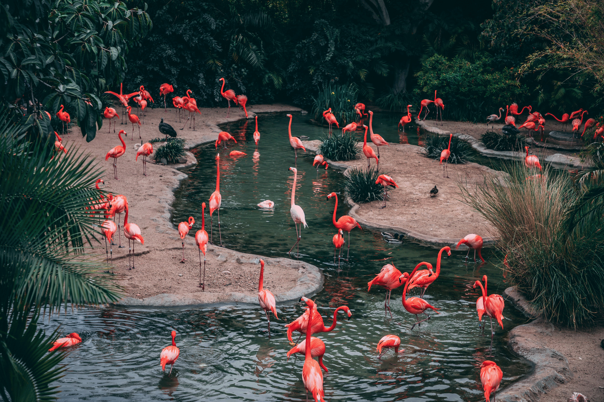

Zoos
A couple of months ago, my kids and I went to the Franklin Zoo here in Boston. We saw diverse kinds of animals, but the one that caught my attention was the gorilla and another strange animal that I do not remember its name, but I remember their sad faces. It must be hard for them to be in a cage when they are wild animals, everyone likes freedom.
Separation from mother should be a huge thing also. Some years ago, I watched a documentary on Netflix about orcas named Blackfish. This documentary suggested that some of the whales were captive when they were calves and separated from mother, causing trauma. It is the same for any animal in the zoo.
I do not like zoos, they are depressing for the
animals. I have been to a few zoos, I visited Franklin
zoo, the Miami Dade zoo a day after I was in the zoo,
it came in the newspaper that the tiger escaped from
his cage. I was omg good thing it was not the day I
was there, and 2 more zoos in my country.
I have been to a few zoos, I visited Franklin
zoo, the Miami Dade zoo a day after I was in the zoo,
it came in the newspaper that the tiger escaped from
his cage. I was omg good thing it was not the day I
was there, and 2 more zoos in my country.
One of the reasons for zoos and benefits for people is the learning of species. I would not know about the existence of many animals if it would not for the zoo, because the species are from other regions, some of them from remote regions. Another good reason is you can spend time with your family and encourage knowledge to the kids.
A benefit for the animals is they can be studied, researched and with that improve their life conditions (for the next generation) not really for the ones that are been studied.